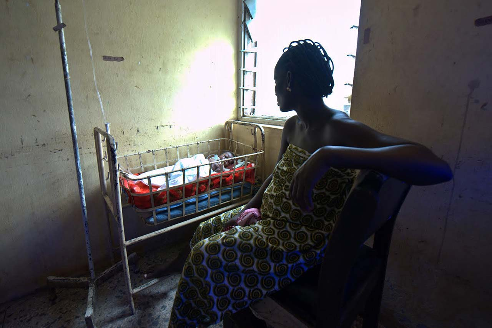
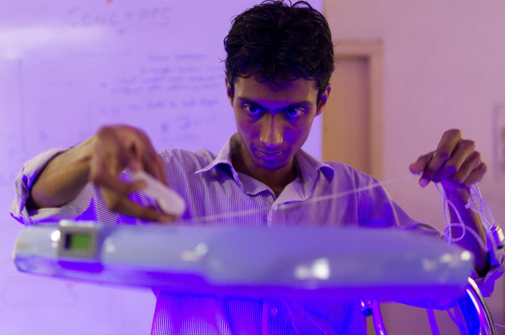

Brilliance
by D-Rev
Combatting Jaundice in the Developing World
The Problem
The Problem
Worldwide, jaundice affects millions of newborn babies.
Though the illness isn’t specific to developing countries, contextual factors such as rates of premature birth, insufficient prenatal care, and limited hospital resources mean that children born into poverty suffer disproportionately from the severe consequences of delayed or inadequate treatment. The fluorescent bulbs in the standard phototherapy devices that are used to treat jaundice burn out, and hospitals often can’t afford to replace them. Or sometimes they’re replaced with bulbs that don’t provide the required spectrum, or intensity, of light. In these and many other cases, the problem is eminently solvable. For design organization D-Rev, the solution was clear: develop a phototherapy device with LEDs instead of CFLs (that are more efficient and do not require costly replacement), and make the device affordable for medical providers across the globe. Two years in the making, Brilliance is precisely that device.
The Outcome

“For D-Rev, the solution was clear: make the device affordable for medical providers across the globe.”
As of mid 2014, D-Rev has sold over 800 Brilliance devices primarily in India, with some distribution in 18 countries including some in East Africa, the Philippines, Colombia, and Nigeria. Designers at D-Rev study the impact of the devices through a series of metrics that help them understand not only how many babies have been treated, but how many of those babies would not have had access to treatment without the existence of Brilliance (what they term “babies otherwise”), and how many deaths and disabilities have been averted because Brilliance is on the market. The D-Rev team is now scaling up their manufacturing, expanding into other international markets, and working on a second version of the product to be released later in 2014.
The Process
“For D-Rev, the solution was clear: make the device affordable for medical providers across the globe.”
Inspiration
D-Rev begins their process when users identify a problem. D-Rev then follows up with due diligence to better understand the problem and its extent. “In a lot of our field work, we go to our target country and visit hospitals, interviewing any doctor who will talk to us, to understand the pain points” explains D-Rev Operations Manager Nicole Rappin, “Where we innovate is in designing for context and user-centricity, designing for affordability, and understanding the systems that prevent solutions from reaching every corner of the world.”
In the case of Brilliance, D-Rev didn’t invent a totally new technology. LED phototherapy devices have been in use in Western hospitals for years, but nobody had yet designed a version that was affordable in low-income markets and could be delivered efficiently to those in the developing world. “We learned early on when testing prototypes with users, that we shouldn’t radically shake up how phototherapy is normally done,” says Rappin. “Doctors were averse to change, they wanted their phototherapy devices to look the same and function the same as those they saw in high-end hospitals, just to be more cost effective and durable.” Brilliance’s great innovation is that it uses fewer components than previous phototherapy models, making it lighter, cheaper, and easier to maintain.
Ideation
Once the problem was better understood, D-Rev developed conceptual solutions and embarked on a round of rapid prototyping, building a handful of iterations for feedback from users (ranging from purchasers to maintenance people to nurses), and testing them internally to see what was most effective clinically. With those that seemed promising, the designers returned to the field for doctors to test fully-functional prototypes, inviting feedback on key questions like how much they would pay for the device, what they would change, and what was still missing that they hoped to see. More than simply focusing on doctors, though, the D-Rev team incorporated feedback from everyone who touches Brilliance from the delivery person to the patient.
Implementation
Once they’d arrived at the right design, D-Rev partnered with Phoenix Medical Systems, the largest manufacturer of neonatal medical equipment in India, which enabled them to tap into a trusted entity, a strong existing distribution network, and locate areas of the country with the highest need for a low-cost device. Because Phoenix had already been selling compact-fluorescent phototherapy devices, it had experience training doctors on the treatment. The partnership benefitted Phoenix, as well, paving the way for the company to sell other equipment along with Brilliance in a market they might not otherwise engage.
Since the release of the first version of Brilliance in late 2012, D-Rev has been focused on scaling the business and expanding sales into East Africa, Southeast Asia, and Latin America. Based on feedback from users of the first device, they are working on a second version, which will launch in late 2014.
Though human-centered design focuses on the end user of a product, D-Rev widened its scope to include the entire range of people who will touch the device, from the operators of the production facility, through distributors and sales representatives and past the doctor to the newborn patient and their family. “We don’t just do user-centric design, we do user-obsessed design,” Rappin explains, “If we were only designing Brilliance to the specs of the doctors, we’d miss what’s going on from the other points of view.”
The team mapped out each individual who will interact with Brilliance, looking closely at the product’s entire cycle, then reconciled the demands and feedback of each stakeholder. For example, a doctor may want to treat two babies at once, and the distributor may argue that the device becomes too heavy to stay within reasonable shipping costs. “We rank each user in the chain and all of their requirements,” says Rappin, “then turn that into ranked product specifications. From there, we incorporate that information into our design process.”